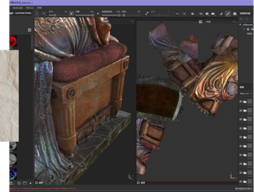
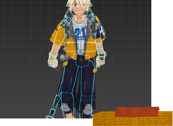
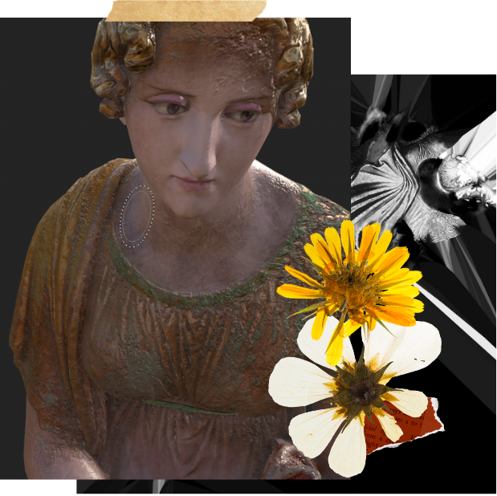
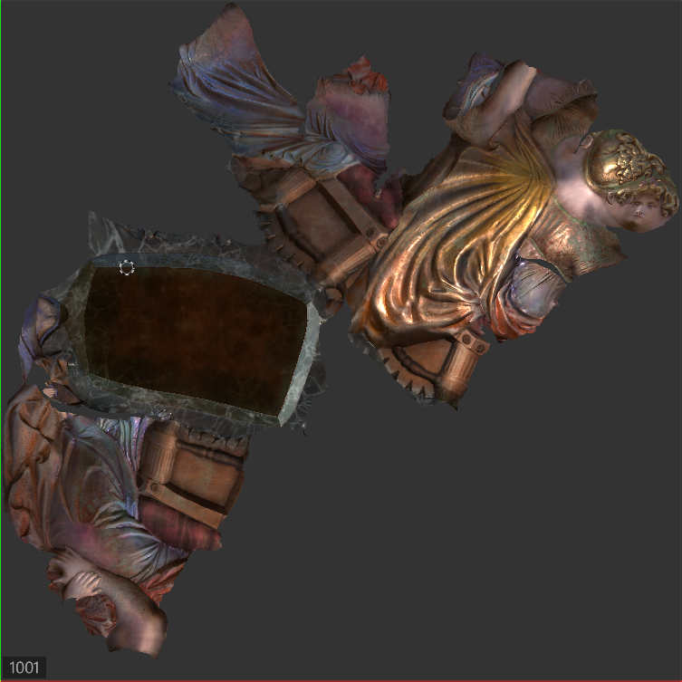
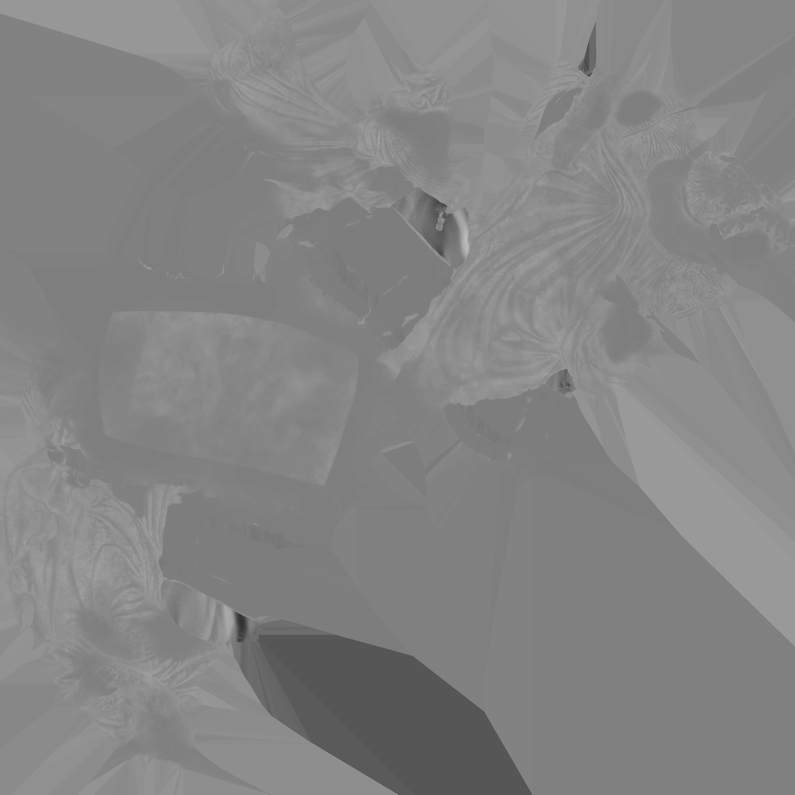
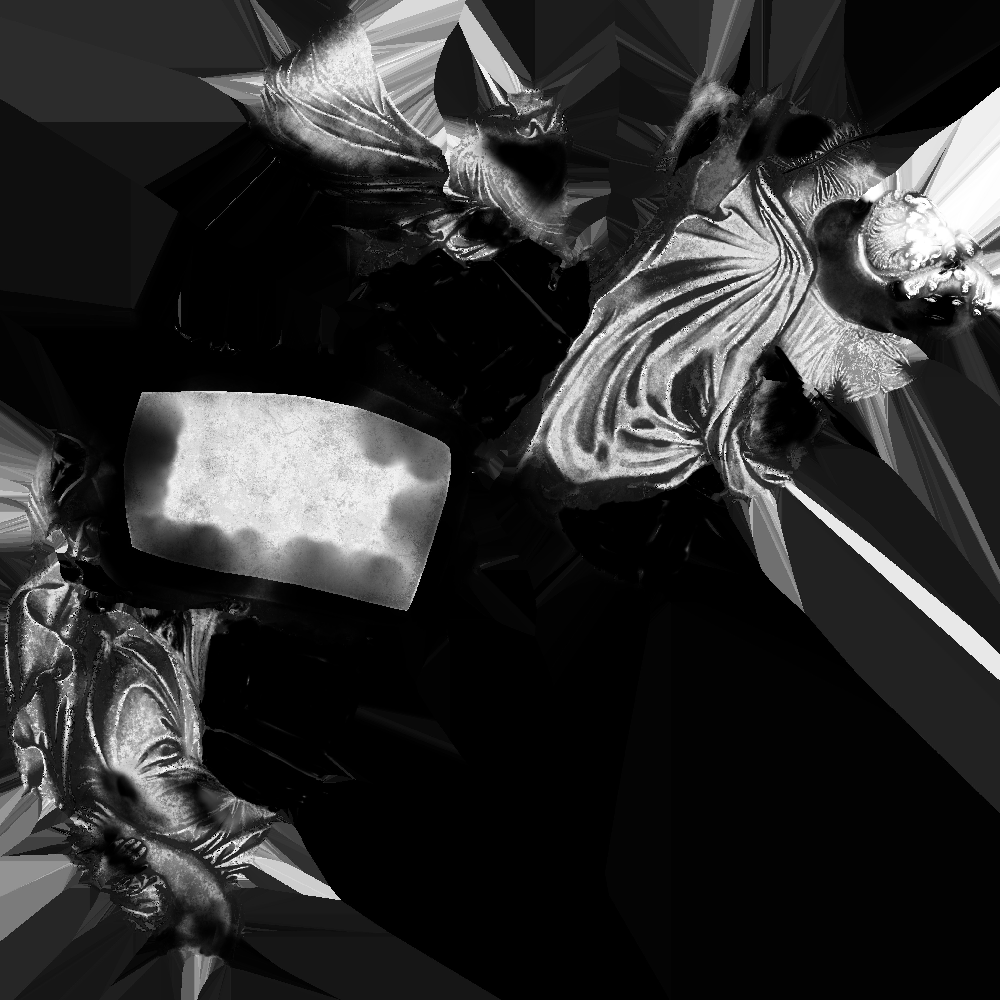
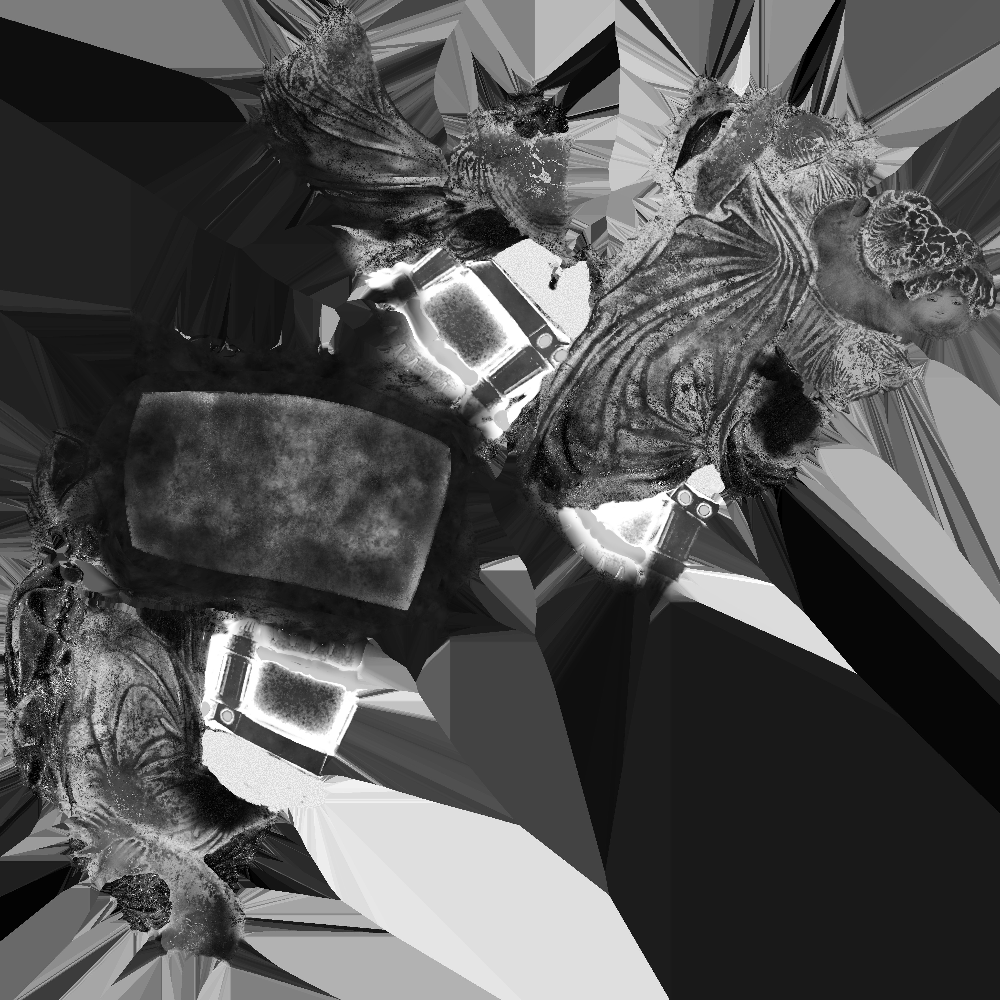
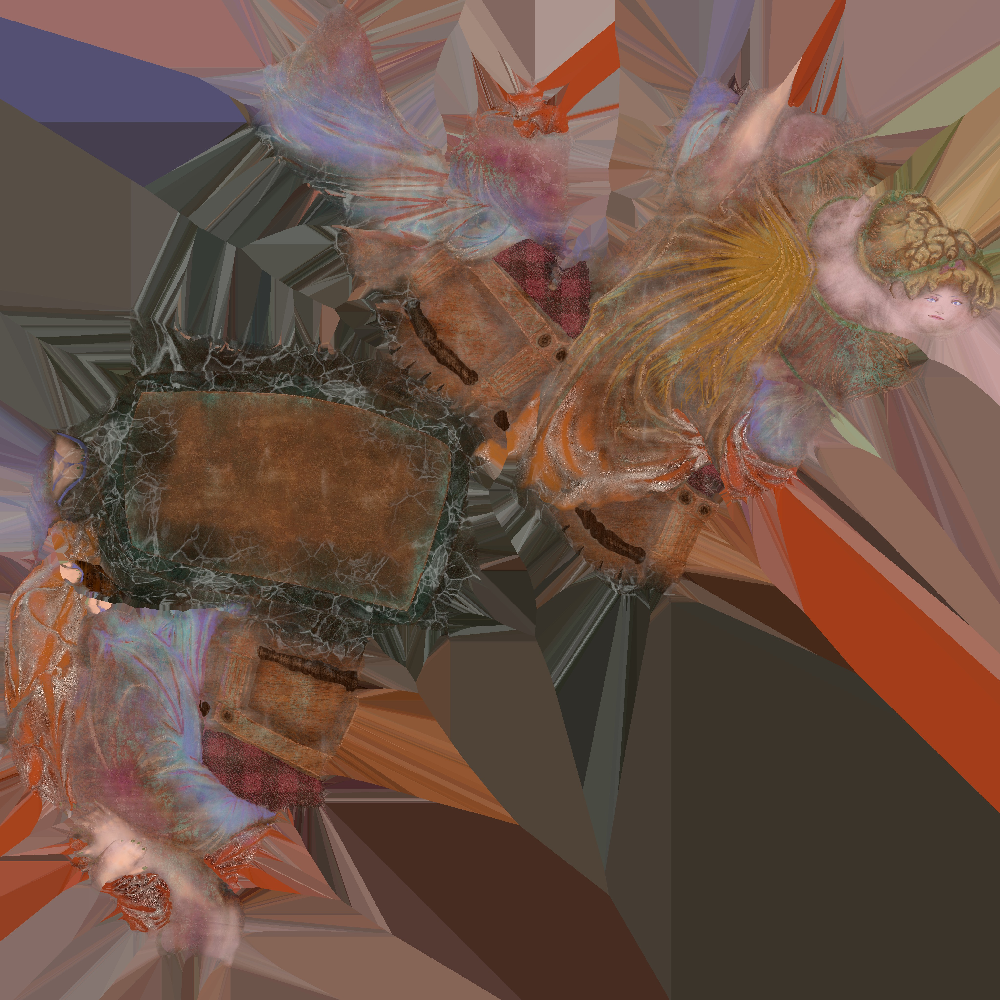
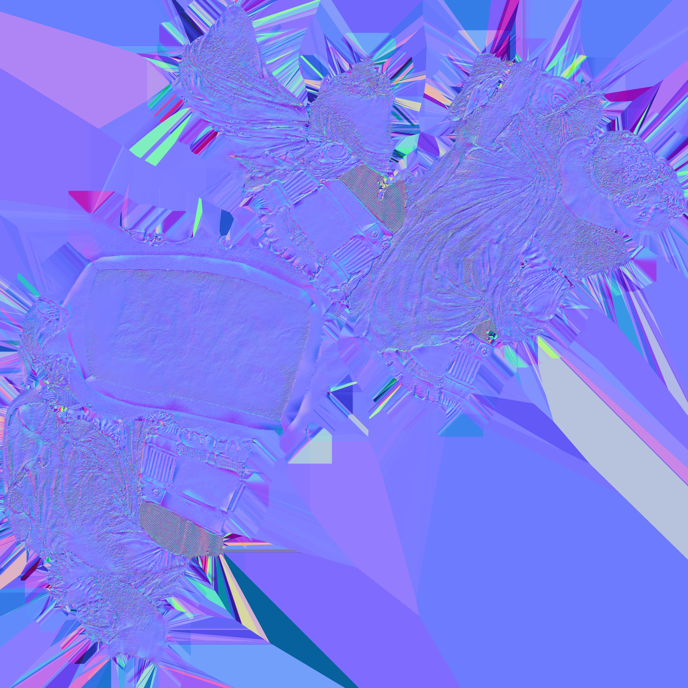

3D 美术 / 角色资产实习
已有低模角色、UV、贴图、材质展示和基础绑定经验。适合从角色部件、道具、小场景、模型整理与展示图制作开始。
低模角色UV贴图
面向游戏与互动内容岗位的作品页。当前作品覆盖低模角色、贴图材质、基础绑定动画、Unity 资产导入与交互测试；我更适合从可执行的小模块切入，在项目里继续补齐规范流程。

这版网页不再按“求合作”写，而是按实习筛选逻辑组织：岗位匹配、作品证据、可迁移能力、后续可补强点。
已有低模角色、UV、贴图、材质展示和基础绑定经验。适合从角色部件、道具、小场景、模型整理与展示图制作开始。
能把资产导进 Unity 做展示和测试，做过交互原型、UI 原型和桌宠类小项目。适合连接美术资产与引擎落地。
目前不是成熟 TA，但对流程、表现、工具和特效有明确兴趣。可从材质表现、简单 Shader/VFX、工具整理辅助切入。
图片素材沿用旧页面，不额外虚构新作品。文案重点改成“这件作品证明了什么能力”。

从 0 制作二次元低模角色，覆盖建模、布线、UV、手绘贴图与最终展示。

重点观察材质层次、贴图通道和旧化质感，补充对 PBR 流程的理解。

课程模型基础绑定、刷权重和动作测试，包含直拳、走路循环、跟随运动等。
这是当前最适合作为简历页首屏后的主项目。它能证明你不是只会摆图，而是走过一次角色资产制作链路。
参考《学园偶像大师》花海佑芽进行角色练习。重点不是复刻 IP，而是练习二次元角色低模结构、部件拆分、UV 组织和手绘贴图。
简历页里不需要把“老师说要放”写出来，改成流程证据。面试官看的是你能否解释结构、贴图和问题，而不是只看最终图。

包含服装、头发、皮肤和装饰部件。当前风格偏手绘，适合展示基础贴图能力；后续可补一版更贴近游戏资产规范的命名、通道和导出说明。


这组作品更适合放在“补充能力”区：证明你碰过雕刻、贴图通道和材质分层，但不要包装成成熟商业资产。
使用 Substance 3D Painter 处理材质和贴图通道。目标是把原本偏雕塑感的模型重新处理出“局部重新活过来”的视觉层次。

通道图用于说明材质不是单张效果图，而是由多个贴图信息共同支撑。实习面试里可以主动说明：这组还不是手游资产规范流程，主要用于材质理解训练。







动画部分不抢 3D 角色主线，但可以证明你理解动作规律，能配合模型落地做基础测试。
模型由课程提供，我负责基础骨骼绑定、刷权重和动作测试。练习内容包括直拳、走路循环、跟随运动、弹跳球等。

基础攻击动作，观察出拳节奏和身体跟随。
第二版动作测试，用于比较姿态和发力感。
基础循环动画，重点看重心与节奏。
基础动画规律练习；录屏有掉帧，但动作逻辑完整。
这块是给 HR 和导师看的：不要只展示“我会软件”，要让对方知道你能被安排到哪里。
角色部件、小物件、小场景、UV、贴图、基础展示图整理。
把模型、贴图、动画导入 Unity，做基础展示、检查和交互测试。
能把制作流程、问题和改动整理成可沟通的文档或网页。
对 TA、VFX、Shader、工具化流程有兴趣，适合被丢小任务快速试错。